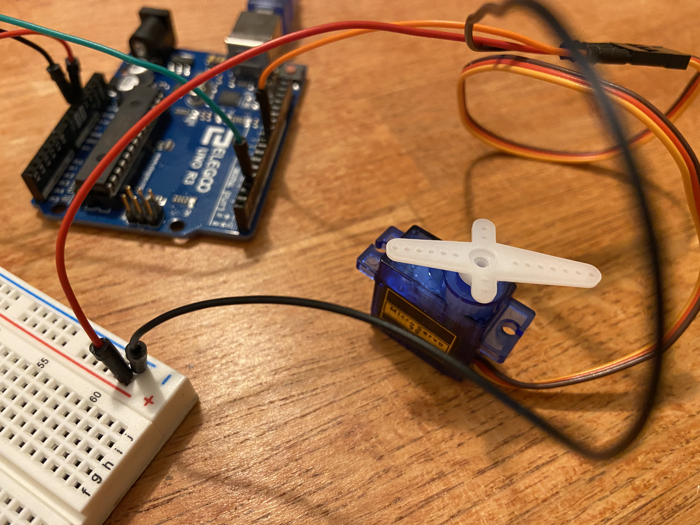
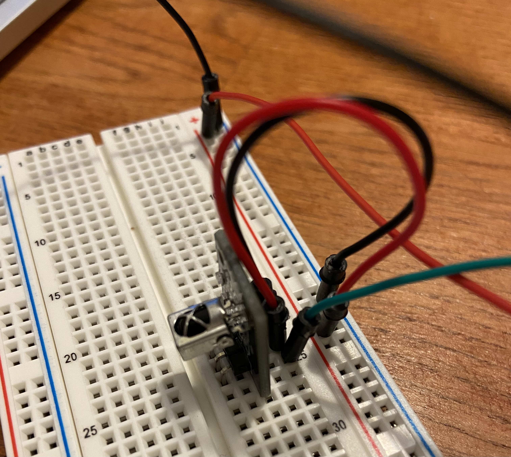
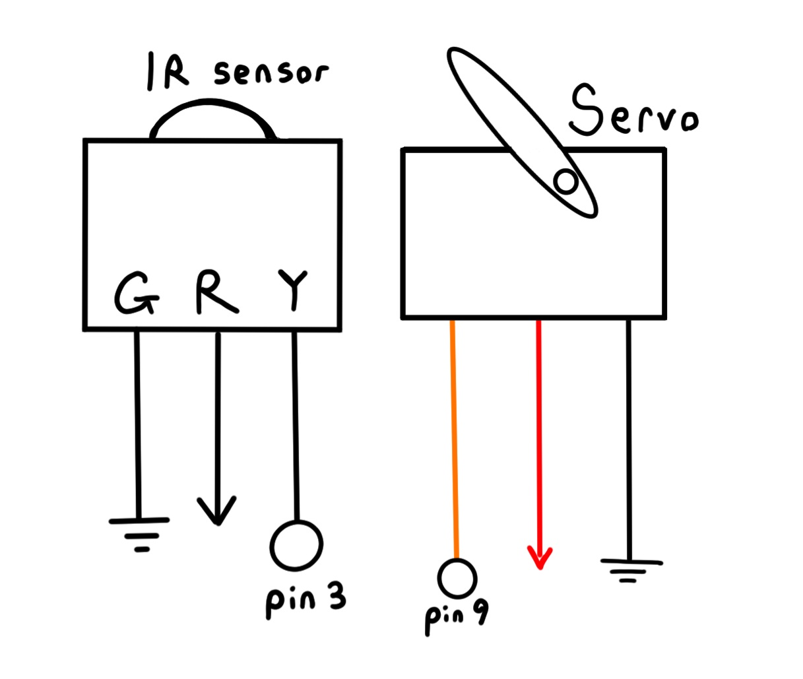

Sydney's Assignment 5 - Higher Voltage and Transistors!
For this assignment, I used capacitive sensing to control the LED light strip (off, on, blinking, and fading in a loop).
 
For capacitive sensing, I wired a 1M ohm resistor between pins 4 and 2.
I then put an additional wire between the resistor and 2 and wrapped it in foil, so I could touch it to activate the capacitive sensing.
For the LED strip, I wired from my power source, through the positive and negative ends in the LED strip, and through an N-MOSFET transistor.
The transistor wired through power and ground, and also to the Arduino at pin 9 to control the power supply. I also made sure to connect the Arduino ground and power supply ground through the negative rail of my breadboard.

A schematic of the circuit is shown above.
Arduino Code
My code uses the Capacitive Touch library. During setup, I record min and max readings, and get an average capacitive touch reading as the metric for when touch is activated. Then, any capacitive touch readings higher than average will result in the touch count increasing by 1.The touch count helps keep track of which LED strip behavior to run (off, on, blink, fade), depending on what value of count%4 is returned. The fade loop code also takes capacitive touch readings and tests, so that the fade loop can be exited if the sensor is activated.
// code to test how many times capacitive touch is activated, and to loop through a LED strip pattern of off, on, blink, and fade with each touch
// example capacitive sensor code from lecture and https://playground.arduino.cc/Main/CapacitiveSensor/
// average metric for calibrating capacitive touch
int avg = 0;
// counts to keep track of number of touches
int count = 0;
int ref = 0;
// test whether to exit loop if sensor is activated
long test = 0;
//capacitive sensing library
#include <CapacitiveSensor.h>
CapacitiveSensor cs_4_2 = CapacitiveSensor(4,2); // 1 megaohm resistor between pins 4 & 2, pin 2 is sensor pin
void setup() {
cs_4_2.set_CS_AutocaL_Millis(0xFFFFFFFF); // turn off autocalibrate on channel 1 - just as an example
// start serial monitor
Serial.begin(9600);
// set up transistor pin for output
pinMode(9, OUTPUT);
//set-up min max and average to calibrate the sensor
int min = 100;
int max = 0;
// for loop to record min-max in calibration period
for (int i = 0; i < 200; i++){
// get sensor reading
long total1 = cs_4_2.capacitiveSensor(30);
if (total1 > max){
max = total1;
}
if (total1 < min){
min = total1;
}
delay(10);
}
// get average of min/max as metric for touch on/off
avg = (min + max)/2;
//print out min, max, avg to serial monitor
Serial.print("Min Max Avg: ");
Serial.print(min);
Serial.print(" ");
Serial.print(max);
Serial.print(" ");
Serial.println(avg);
delay(500);
}
void loop()
{
// get capacitive sensor reading
long total1 = cs_4_2.capacitiveSensor(30);
// while loop to tell when reading is higher than calibrated average (i.e. touch is on)
while (total1 > avg){
// count + 1 for each touch
count = ref + 1;
// recalculate to tell when touch deactivates
total1 = cs_4_2.capacitiveSensor(30);
}
// update ref if count changed
if (ref != count){
ref = count;
//print count to monitor
Serial.print("Count: ");
Serial.println(count);
}
// light pattern - off on blink fade
if (count%4 == 1){
// at part 2 of the pattern, light is on (150/255)
analogWrite(9, 150);
}
else if (count%4 == 2){
// at part 3 of the pattern, light is blinking (50/255)
analogWrite(9, 50);
// .05 sec delay between on/off
delay(50);
digitalWrite(9, LOW);
delay(50);
}
else if (count%4 == 3){
// at part 4 of the pattern, light is fading
// for loop to fade up
for (int i = 0; i <= 255; i++){
// test if sensor is touched to exit the fade loop
test = cs_4_2.capacitiveSensor(30);
// if not touched
if (test < avg and count == ref){
// analogWrite up to 255
analogWrite(9, i);
//.01 sec delay
delay(10);
}
// update count if sensor touched during loop
else{
count = ref + 1;
}
}
// for loop to fade down
for (int i = 255; i >= 0; i--){
// test if sensor is touched to exit the fade loop
test = cs_4_2.capacitiveSensor(30);
// if not touched
if (test < avg and count == ref){
// analogWrite up to 255
analogWrite(9, i);
//.01 sec delay
delay(10);
}
// update count if sensor touched during loop
else{
count = ref + 1;
}
}
}
else{
// part 1, light off
digitalWrite(9, LOW);
}
}
The function of the circuit and code is shown in the following GIF.